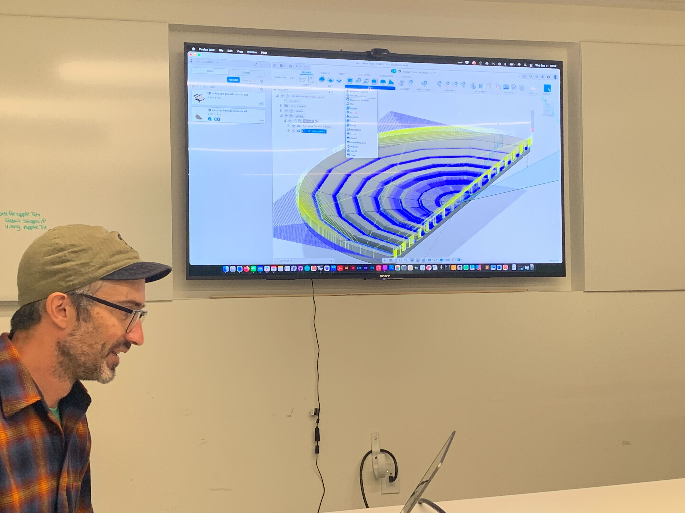

### Week 4: CAD Learning and Planning
This week was focused on creating the CAD for the Fresnel Reflector array that could be used to reflect sunlight for our solar cooker, in the event that a parabolic reflector cannot be created.
Last year, the array support consisted of small acryllic pieces hot glued together. This was found to be very time-consuming, and also too weak to give ample support to the reflector array.
This year, we will be machining down foam into our desired shape, and then adding the reflector pieces after we have our support surface created. This should be a far less tedious process, and also should provide more reliable support.
I started off the week by creating a few models in Fusion 360, to help adjust to the new software.
I created this lego block:
And this bookholder:
The remainder of the week was spent discussing the possible ways to create the CAD of the support structure, including discussions on where we might place the focal point of the entire contraption and how this would affect the design of the structure. The design would be fairly simple if we wanted to focus the light at a point aligned with the center of the reflector array, but if wanted to reflect the light at a point off center, or even outside of the array completely, each individual lens would need to be angled in such a way to do so.

We also were able to get a short lesson on how to set up tool paths. There are many different setting and features for the tool paths, but the overarching lesson is that often times, we can save time and still achieve a very clean result if we use a "simpler" tool path. We could spend hours utilizing every single feature in order to optimize the machining of every single aspect of the product, or we could use a simple path and still receive great results.
We ended the week with a preview of how our support structure would actually be created in real time.
<video controls>
<source src="./machinepath.mp4" type="video/mp4">
</video>
And here is a [link to the home page](../index.html).